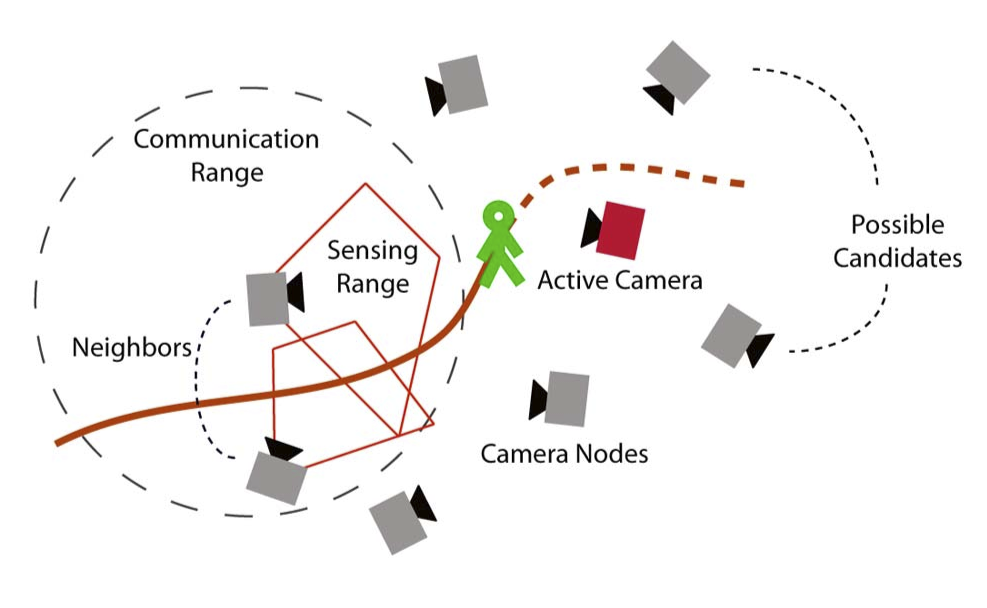
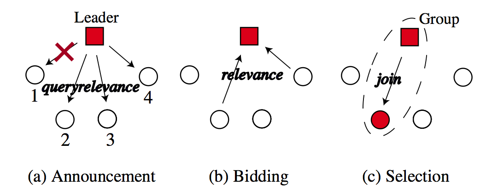
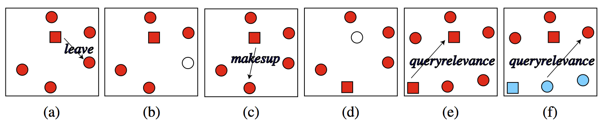

Camera Grouping in Smart Camera Networks
Faisal Z. Qureshi and Demetri Terzopoulos
Synopsis
We propose a distributed coalition formation strategy for collaborative sensing tasks in camera sensor networks. The proposed model supports task-dependent node selection and aggregation through an announcement/bidding/ selection strategy. It resolves node assignment conflicts by solving an equivalent constraint satisfaction problem. Our technique is scalable, as it lacks any central controller, and it is robust to node failures and imperfect communication. Another unique aspect of our work is that we advocate visually and behaviorally realistic virtual environments as a simulation tool in support of research on large-scale camera sensor networks. Specifically, our visual sensor network comprises uncalibrated static and active simulated video surveillance cameras deployed in a virtual train station populated by autonomously self-animating pedestrians. The readily reconfigurable virtual cameras generate synthetic video feeds that emulate those generated by real surveillance cameras monitoring public spaces. Our simulation approach, which runs on high-end commodity PCs, has proven to be beneficial because this type of research would be difficult to carry out in the real world in view of the impediments to deploying and experimenting with an appro- priately complex camera network in extensive public spaces.

A camera network for video surveillance consists of camera nodes that can communicate with other nearby nodes. Collaborative, persistent surveillance requires that cameras organize themselves to perform camera handover when the observed subject moves out of the sensing range of one camera and into that of another.

Task auction supports coalition formation. The red cross indicates a lost message.

(a)-(b) A node leaves a group after receiving a leave message from the group leader. (c)- (d) Old group leader selects a new group leader and leaves the group. (e) A leader node detects another leader performing the same task; leader/supervisor demotion commences. (f) Conflict detection between two resources.
Publications
"Smart Camera Networks in Virtual Reality," F.Z. Qureshi, D. Terzopoulos, Proceedings of the IEEE, 96(10), October, 2008, 1640—1656, (Special Issue on "Smart Cameras").
"Distributed Coalition Formation in Visual Sensor Networks: A Virtual Vision Approach,'' F.Z. Qureshi, D. Terzopoulos, Proc. Third IEEE International Conference on Distributed Computing in Sensor Systems (DCOSS 07), Santa Fe, NM, June, 2007, in Lecture Notes in Computer Science, 4549, J. Aspnes et al. (eds.), Springer-Verlag, New York, 2007, 1—21.
Network Simulation Movies
The following videos show various aspects of the network model underlying automatic grouping, coordination, and control in smart camera networks. Most notable aspect is the robustness to camera failures, removal and addition, and lost network messages. It is also noteworthy that the proposed auction-bidding-selection based camera coordination and control does not rely upon camera calibration, but can leverage this information when available.
Check out the virtual vision page for videos showing virtual camera networks---deployed in our synthetic 3D environment, populated with life-like self-animating pedestrians---carrying out persistent observation tasks by using camera grouping, handoff, control, and coordination strategy shown on this page.
Camera grouping/splitting/merge via auction/bidding/selection
Large scale network failure
Robustness to group leader failure/removal
No conflict resolution
Conflict resolution
F.Z. Qureshi
Last updated on
Thursday, December 13, 2012 8:23 PM